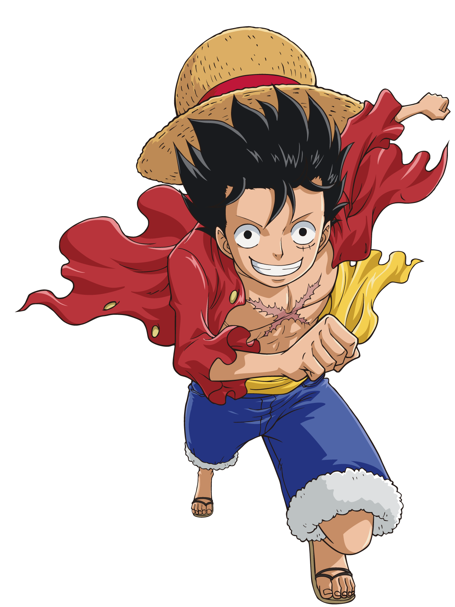

Viaje nessa aventura.
One Piece é uma série de mangá escrita e ilustrada por Eiichiro Oda. onde conta a história de um garoto chamado luffy que tem como inspiração seu amigo shanks(O ruivo)então ele decide se tornar o rei dos piratas junto com sua tripulação formidavel.
Atualmente o anime conta com mais de 1078 episódios
Tripulantes:
